Momentum Contrast(MoCo) v3 리뷰
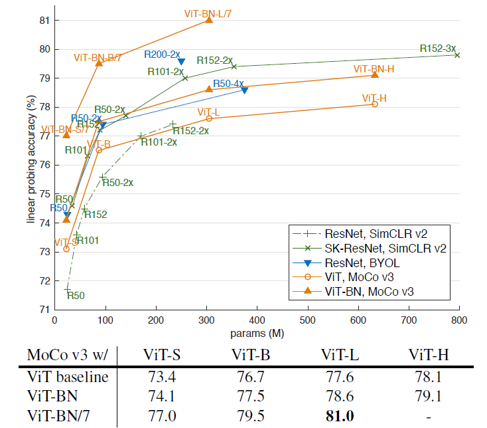
오늘은 FAIR에서 최근에 발표한 An Empirical Study of Training Self-Supervised Visual Transformers (MoCo v3) 논문에 대해 리뷰를 진행해보려고 합니다. 논문에서는 기존의 MoCo v2를 개선한 MoCo v3를 소개하고 이를 ResNet이 아닌 Transformer 기반 모델인 ViT에 적용하였습니다. MoCo 기반의 framework가 ViT를 만나서 어떤 결과를 보여주었을지 확인해보겠습니다.
MoCo v3
MoCo v3는 기존 MoCo v1/v2를 기반으로 하는 self-supervised learning framework입니다. 기본적인 MoCo에 대한 소개는 MoCo 리뷰글을 참고하시면 좋을 것 같습니다.
MoCo v3는 크게 두 가지 측면에서 개선되었습니다. 우선 MoCo v3는 기존 MoCo의 기반 아이디어 중 하나인 queue 구조의 dictionary를 없애고, SimCLR에서처럼 큰 batch size(default=4096)를 이용하여 batch 내부의 다른 이미지들을 negative sample로 활용했습니다.
또한 MoCo v3는 기존의 projection head에 더해 prediction head를 추가하여 query encoder를 구성하였습니다. 이는 negative sample을 이용하지 않고도 성능을 극대화한 BYOL framework에서 아이디어를 얻은 것 같습니다.Query encoder와 달리 key encoder는 prediction head를 넣어주지 않았습니다.
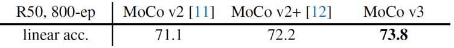
위 두 가지 개선사항으로 MoCo v3는 이전 버전과 비교해서 1.6%의 linear evaluation 성능 향상을 보여주었습니다. 지금부터는 MoCo v3 framework를 Transformer 기반 모델에 적용한 실험들에 대해 설명드리겠습니다.
Stability of Self-Supervised ViT Training
지금까지 대부분의 self-supervised learning 관련 연구들은 ResNet 기반의 encoder 구조를 이용하여 학습하고 평가하였습니다. 하지만 NLP 분야에서 self-supervised learning을 적용하여 큰 성공을 거둔 Bert나 GPT-3 등의 모델은 convolution이 아닌 self-attention mechanism을 활용한 Transformer 모델을 이용하였습니다. 또한 최근에는 CV 분야에서도 Transformer 모델을 기반으로 한 ViT 모델이 큰 주목을 받았고 좋은 성능을 보여주었습니다. 본 논문에서는 현재 연구 흐름에 따라, contrastive learning 기반의 self-supervised learning 방법을 Transformer 모델에 적용하였습니다.
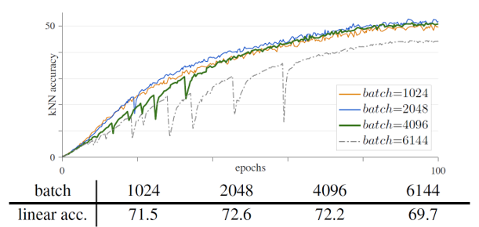
하지만 막상 학습을 진행해보니, 학습의 불안정성과 관련한 문제가 대두되었습니다. 여러 실험들에서 batch size를 키울수록 학습 정확도가 조금씩 떨어지기에, 원인 분석을 위해 kNN 결과값을 좀 더 촘촘히 확인해보습니다.(기존에는 1 epoch마다 1번씩 확인했다면, 이후에는 10 iterations마다 1번씩 확인하였습니다.) 그러자 batch size를 키우면 키울수록 kNN curve에서 dips가 많이 관찰되고 전반적인 학습 정확도도 감소하였습니다.
위의 그림에서 batch size가 4096보다 커지게 되면 dips가 발생하여 학습의 안정성이 급격히 떨어지게 되는데, 이는 마치 local optimum에서 벗어나 새로운 global optimum을 찾는 것처럼 보였습니다. 결과적으로 학습은 잘 수렴하였고 결과도 기존보다 살짝 낮은 정도로 측정되었지만, 학습 과정에서의 불안정성은 분명히 존재했습니다.
- learning rate
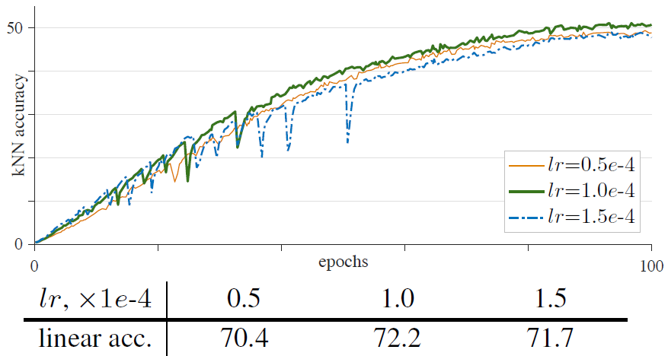
Learning rate는 batch size에 따라 linear하게 결정하는 linear scaling rule (lr x batch_size/256) 에 따라 결정하였습니다. lr 은 hyper-parameter로써 여러 값을 비교해서 실험했습니다. 위의 그림에서 lr 의 크기가 너무 커지면 dips가 많아지며 학습이 불안정해지는 것을 확인할 수 있었습니다. 또한 lr 의 크기가 너무 작으면, 학습이 under-fitting되어 성능이 낮게 측정되었습니다. 결론적으로 적절한 lr 을 찾는 것이 중요했습니다.
- Optimizer
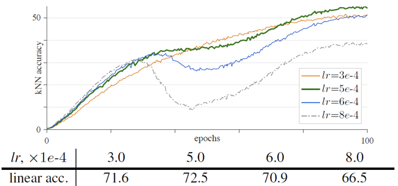
기존 ViT에서는 AdamW optimizer를 이용하여 학습하였습니다. 하지만 SimCLR이나 BYOL 등에서 크기가 큰 batch size를 이용할 때 LARS optimizer를 이용하면 학습이 잘 된다고 이야기하였고, 논문에서는 AdamW의 LARS 버전인 LAMB optimizer를 이용하여 결과를 비교하였습니다. 위의 그림은 LAMB optimizer를 이용했을 때의 training curve인데, lr 에 따라 중간중간에 기울기가 매우 낮은 dips가 관찰되었습니다. 전반적으로 LAMB가 AdamW보다 lr 에 sensitive한 모습을 보였기 때문에 논문에서는 AdamW를 default optimizer로 이용했습니다.
- Freezing patch projection layer
위의 실험 결과들 대부분에서 ViT + MoCo v3는 불안정한 학습을 보여주었습니다. 불안정성에 대한 원인을 좀 더 자세히 파악하기 위해, layer 별로 학습이 진행됨에 따라 gradient의 추이를 그려보았습니다.
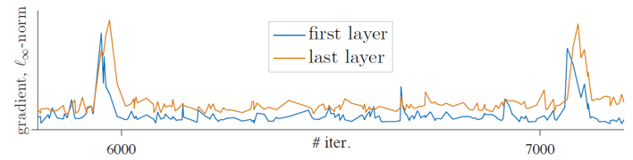
실험 과정에서 gradient의 급격한 변화가 kNN accuracy에서의 dips를 발생하시키며, 이러한 gradient의 급격한 변화는 주로 첫 번째 layer에서 발생하여 뒤의 layer로 전파되는 형태를 띄는 것을 확인했습니다. 이로부터 첫 번째 layer에서 불안정성이 발생한다고 가정하였고, 이를 해결하기 위해 가장 앞 단의 layer인 patch projection layer를 고정한 채 학습을 진행했습니다. 즉 patch를 embedding으로 변환해주는 layer를 학습하지 않음으로써 random patch projection을 수행했습니다.
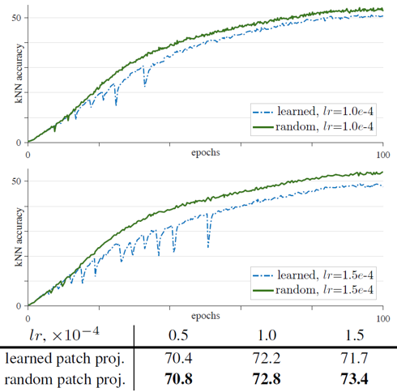
놀랍게도 random patch projection을 이용한 결과 training curve에서의 dips는 사라졌고, 학습의 안정성이 개선되자 전반적인 학습의 정확도도 향상되었습니다. Random patch projection을 이용하면 모든 lr 에서 안정화된 학습 결과를 보여주었습니다. 또한 MoCo 뿐만 아니라 SimCLR, BYOL을 ViT에 적용시킨 경우에도 기존의 ViT에서는 학습 과정이 불안정했지만, gradient를 통과시키지 않고 patch projection layer를 고정하자 학습이 안정화되었습니다.
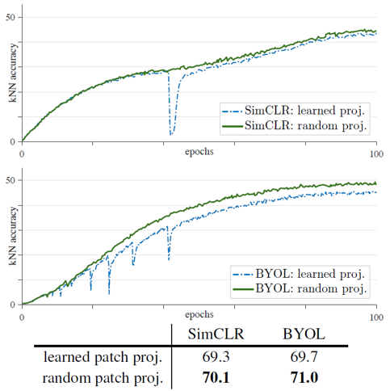
그렇다면 random patch projection layer가 성능을 향상시킬 수 있었던 이유가 무엇일까요. 우선 patch projection matrix은 768차원으로, 각 patch와 정확히 같은 차원(16x16x3)을 가지기 때문에 정보의 손실이 발생하지 않습니다. Patch projection layer를 고정시키면 최적화해야할 parameter의 개수가 줄어들게 되고, 이는 solution space를 점진적으로 줄여나가는 과정의 일부라고 해석합니다. 따라서 논문은 ViT의 불안정성한 학습의 근본적인 원인은 최적화의 어려움이며, 이를 위해서는 근본적인 해결책이 있어야 한다고 이야기합니다. (해결책을 제시하지는 않고 있습니다.)
Training Details
ViT + MoCo v3는 기본 모델 위에 projection 및 prediction head를 추가한 구조로 학습을 진행하였습니다. 이 때 projection head와 prediction head는 각각 2-, 3-layer로 구성된 ReLU가 포함된 MLP 형태입니다. 또한 모든 layer들에는 batch normalization 과정이 포함되어 있습니다.
Loss function으로는 MoCo에서 기존에 이용한 InfoNCE loss를 scaling하여 이용하였습니다. InfoNCE loss는 아래의 식을 가지는 contrastive loss입니다.
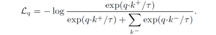
모델 구조는 기본적인 ViT의 구조를 따르고 있고, input patch의 크기는 14x14 또는 16x16 을 이용하였습니다. ViT에서와 마찬가지로 positional embedding을 통해 patch의 위치 정보를 부여하였는데, 기본값으로 sinosoidal positional encoding을 이용했습니다. 또한 학습가능한 class token을 두어 Transformer block을 통과하게 한 뒤 output으로 이용했습니다. Class token의 output은 MLP layer들의 input vector로 이용되었습니다.
학습에 대한 평가는 linear evaluation(probing)을 통해서 진행했습니다. 학습이 종료된 후 projection head와 prediction head를 제거하고, linear classifier를 이어붙여 학습해주었습니다. 이 때 SGD optimizer와 4096의 batch size로 학습했습니다.
Results
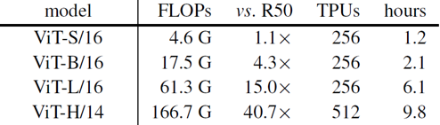
논문에서는 크게 네 가지 ViT 모델을 이용하여 실험하였습니다. ViT는 ResNet에 비해 parameter 수가 훨씬 많기 때문에, 더 많은 학습 시간과 학습 자원이 필요했습니다. 위의 표는 모델 별로 학습에 사용된 자원과 학습 시간을 보여주고 있습니다. 기본 모델로 이용한 ViT-Base 모델은 100 epochs를 학습하는 데 TPU core 256개를 약 2.1시간동안 이용했습니다.

ViT + MoCo v3는 ViT를 다양한 self-supervised framework로 학습한 여러 모델들보다 더 좋은 성능을 보여주었습니다. 위의 표는 MoCo v3와 SimCLR, BTOL, SwAV를 비교하고 있는데요, ResNet backbone의 경우 BYOL이 가장 좋은 성능을 보여주었지만, ViT backbone의 경우에는 MoCo v3가 우월한 성능을 보여주었습니다. 특히 MoCo와 SimCLR은 Transformer 기반의 backbone에서 상대적으로 더 잘 작동하는 것을 확인할 수 있습니다.
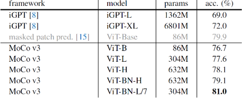
또한 MoCo v3는 masked patch prediction 기반의 iGPT나 ViT보다도 좋은 성능을 보여주며, self-supervised learning 모델의 ImageNet linear evaluation에서 SOTA의 성능을 보여주었습니다. 특히 Batch normalization을 추가한 7x7 patch size의 ViT-L 모델은, 이전의 patch size를 이용했을 때보다 약 6배의 계산량을 이용해야 했지만, 무려 81.0%의 정확도를 기록했습니다.
또한 self-supervised learning을 통해 학습한 ViT 모델들은 크기가 커질수록 더 높은 정확도를 보여주었습니다. 이는 ImageNet-1k/21k로 supervised learning을 통해 학습할 때 ViT-L보다 ViT-B가 높은 정확도를 보인 것과 상반된 결과였습니다. 이를 통해 self-supervised 기반의 representation learning이 over-fitting에 훨씬 더 강인하다는 것을 확인할 수 있었습니다.
Ablation Studies
- Positional embedding
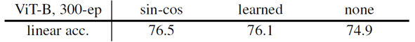
Sinosoidal positional embedding과 학습가능한 positional embedding, 그리고 positional embedding을 아예 이용하지 않았을 때의 경우를 비교하여 실험했습니다. 결과는 sinosoidal positional embedding을 이용했을 때가 아무런 positional embedding을 이용하지 않았을 때보다 1.6%정도 더 좋았습니다. 이는 Transformer가 위치 정보 없이도 물체의 종류를 충분히 잘 파악하는 것으로 해석할 수도 있지만, 현재 사용중인 positional embedding이 patch의 정보를 나타내기에 충분하지 않고 더 좋은 positional embedding 방법이 필요하다는 의미로 해석할 수도 있을 것 같습니다.
- Class token
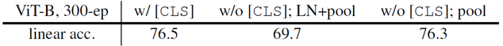
Class token을 이용하여 output으로 이용했을 때와 class token 없이 sequence의 모든 final embedding vector들에 대한 global-average pooling을 거친 값을 output으로 이용했을 때, 그리고 후자의 경우에 layer normalization을 추가한 경우를 비교하여 실험했습니다. 앞선 두 경우는 거의 유사한 성능을 보여주었고, layer normalization은 오히려 정확도를 떨어트렸습니다. ViT 학습시에 class token이 꼭 필요하지는 않다는 것을 보여주었습니다.
- BatchNorm in MLP heads
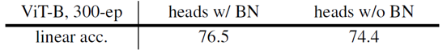
Batch normalization을 MLP heads에 포함한 경우, 포함하지 않은 경우보다 2.1%의 성능이 향상되었습니다.
- Prediction head
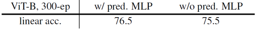
BYOL에서 사용한 prediction head는 사용하지 않았을 경우와 비교해 ViT의 정확도를 1% 정도 향상시켰습니다.
- Momentum encoder
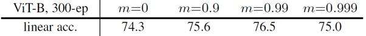
MoCo의 기본 아이디어 중의 하나인 momentum encoder의 정도에 대한 ablation study를 진행하였습니다. m=0인 경우는 key encoder를 따로 학습하는 SimCLR과 같은 형태의 학습 방법인데, 이는 SimCLR의 성능(73.9%)과 유사한 결과를 보여주었습니다. Momentum encoder의 이용은 결과적으로 2.2% 더 정확한 결과를 얻게 해주었습니다.
Transfer Learning
논문에서는 linear evaluation 외에도 CIFAR-10/100, Oxford Flowes-102 등 다양한 데이터셋을 활용한 transfer learning을 통해 ViT + MoCo v3의 성능을 평가했습니다.
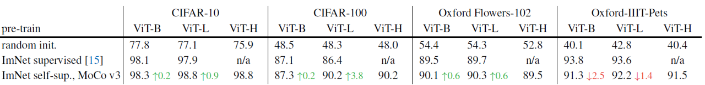
Scratch부터 학습을 진행한 경우, overfitting이 발생해서인지 학습이 제대로 되지 않았습니다. MoCo v3를 이용한 경우, ImageNet 데이터셋으로 supervised learning을 통해 학습했을 때보다 더 좋은 성능을 보여주었습니다. 비교적 일반적인 시각적 특징을 파악했기 때문에, supervised learning을 이용한 경우보다 saturation이 천천히 일어난 것으로 해석할 수 있을 것 같습니다.
Summary
본 논문에서는 CV 분야에서 처음으로 self-supervised Transformer 모델을 학습하였습니다. 학습의 불안정성 문제와 더불어 다양한 Open question을 제시한 의미있는 논문이라고 생각됩니다.
NLP 분야의 Transformer 기반 모델들과 달리, CV 분야에서는 아직 학습이 완벽하게 되지 않은 상태에서 모델이 saturation되는 것을 확인할 수 있었는데요. 이는 언어 기반 데이터와 이미지 기반 데이터 자체의 차이에서 기인할 수도 있지만, 각각의 sample들을 기반으로 학습하는 contrastive learning 기반의 task가 충분히 어렵지 않아서 일수도 있다는 생각이 듭니다.
또한 positional embedding 등 충분히 연구되지 않은 부분에서 구조적인 발전이 지속적으로 이루어진다면, BERT와 맞먹는 visual representation learner도 충분히 탄생할 수 있을 것이라고 기대합니다. 그럼 긴 글 읽어주셔서 감사합니다. 궁금한 점은 언제나 댓글로 달아주시고, 다음 리뷰로 찾아오겠습니다 :)
참고 문헌 및 출처